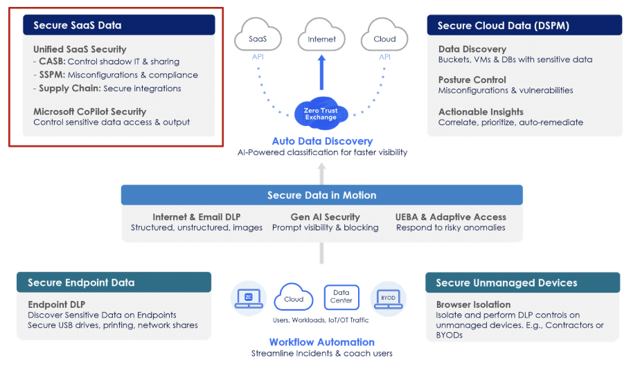
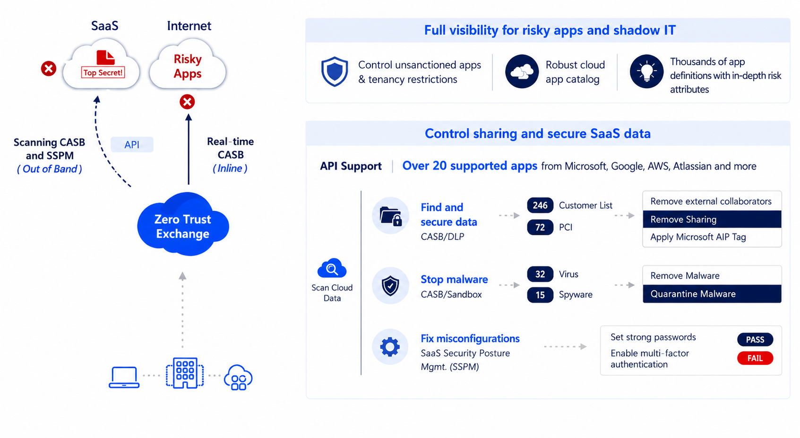
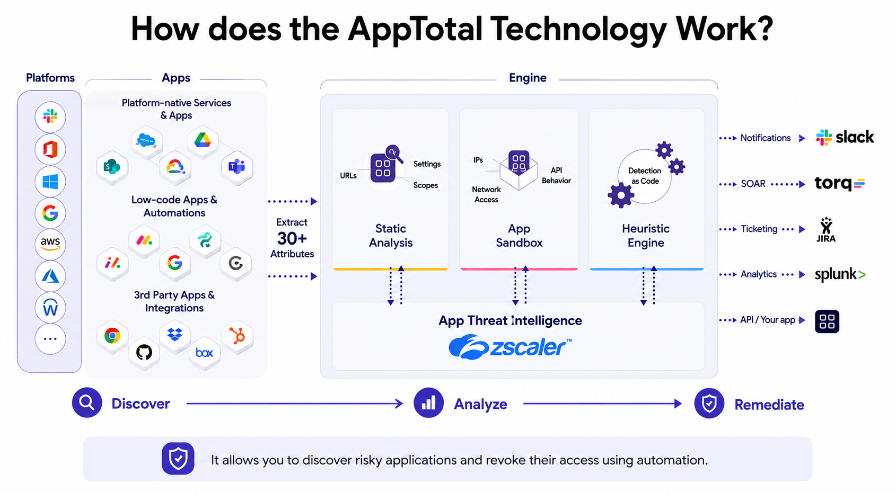

Out-of-Band CASB, SSPM, SaaS Assets reporting, AppTotal Security for third-party apps, and the OOB CASB knowledge check.
Secure SaaS data with Zscaler by controlling access and preventing data leakage.
Zscaler's Unified SaaS Security Platform — including out-of-band CASB, SSPM, and AppTotal — provides comprehensive protection for data sitting at rest across all your SaaS applications.
🤔BEFORE YOU READ — THINK FIRST
Your sensitive data no longer lives only inside your network — it sits at rest inside hundreds of SaaS apps your users signed up for, often without IT knowing. That changes the entire shape of "data security."
If a user uploads a confidential file to a SaaS app you don't even know exists, who is responsible for protecting it — you, the vendor, or the user?
Inline DLP can stop data on the way to the cloud. What about data that's already sitting in OneDrive, Box, or Salesforce from years ago?
Why might Zscaler need both inline and out-of-band approaches rather than just one or the other?
Q1 — MODEL ANSWER
Under shared responsibility, the SaaS vendor secures the platform; the customer remains responsible for the data they put into it. That responsibility does not transfer just because IT did not know about the app. The user owns the immediate act, but the organisation owns the policy, monitoring, and consequence — which is exactly why CASB and Shadow IT discovery are first-class capabilities, not optional add-ons.
Q2 — MODEL ANSWER
Inline DLP cannot — by the time you turn it on, that file is already at rest in the SaaS tenant. You need an out-of-band CASB that connects via API and scans the historical contents of OneDrive, Box, Salesforce, and the rest. The "today" gate is inline; the "everything that came before today" sweep is API-based scanning. Both are required for full coverage.
Q3 — MODEL ANSWER
Because the two approaches answer different questions. Inline catches data in transit and prevents the leak from happening — it is preventive, real-time, and surgical. Out-of-band scans data at rest and catches what already landed — it is investigative, historical, and comprehensive. Use only inline and you cannot remediate the past; use only out-of-band and every new leak happens before you see it.
OVERVIEW
Securing data at rest in SaaS
There are different data protection capabilities that Zscaler provides through the Zero Trust Exchange and its Unified SaaS Security Platform to ensure the security of Software-as-a-Service (SaaS) data. As data breaches evolve and reliance on cloud solutions increases, Zscaler's comprehensive tools and strategies are essential for protecting sensitive information effectively.
With advanced Microsoft Copilot Security features, Zscaler helps organisations address risks like data oversharing and unauthorised access — even within AI-powered productivity tools.

Zscaler Data Security Platform — Secure SaaS Data (highlighted) covers Unified SaaS Security: CASB, SSPM, Supply Chain integrations, and Microsoft Copilot Security
Secure SaaS Data covers: CASB (control shadow IT & sharing), SSPM (misconfigurations & compliance), Supply Chain (secure integrations), and Microsoft Copilot Security (control sensitive data access & output).
IMAGE PROMPT
A flat isometric illustration in deep purple (#6c35cc) and lavender tones showing a translucent fortress-like enterprise data vault with glowing API tendrils reaching outward to floating SaaS app icons (cloud, document, chat, code repo) — symbolising data at rest being secured across many cloud applications simultaneously.
ANALOGY
Inline DLP is like the security guard at the front door checking everyone walking in. Out-of-band SaaS security is the auditor who walks through every filing cabinet inside the building — months or years later — to make sure nothing sensitive ended up in the wrong drawer.
🧠
MENTAL NOTE
Unified SaaS Security = CASB + SSPM + Supply Chain + Copilot Security. It protects data already inside the SaaS, not just data in transit.
ASK A QUESTION
MY NOTES
🤔BEFORE YOU READ — THINK FIRST
An "out-of-band" CASB sits outside the live traffic path — it talks to SaaS apps directly through their APIs. That seems slower than inline inspection, but it unlocks something inline can never do: read the entire history of what's already there.
If a contractor shared a folder publicly six months before you turned on DLP, how would inline scanning ever catch it?
What's the trade-off between a one-time "retro scan" of an entire SaaS tenant versus an "iterative scan" that only watches for changes?
Why would a CASB need to look at misconfigurations (SSPM) and not just sensitive content?
Q1 — MODEL ANSWER
It cannot — inline scanning only sees traffic flowing right now, and the public share was created six months ago through normal authenticated activity. The fix is a retro scan via the SaaS provider's API: the CASB reads the tenant's permission state and content, identifies the public folder, and flags or remediates it. Without an out-of-band capability, six months of public exposure remains invisible forever.
Q2 — MODEL ANSWER
Retro scans are heavy and one-time-ish — useful for the initial sweep when CASB is first turned on, since they cover the entire tenant. Iterative scans are continuous and incremental — they catch new and changed objects without re-scanning the world. The trade-off is depth versus efficiency: retro tells you the full state today, iterative keeps that state current without the cost of repeated full scans. Most deployments do an initial retro then live on iterative.
Q3 — MODEL ANSWER
Because the most damaging SaaS breaches often start with a misconfiguration — public buckets, over-permissive sharing defaults, dormant admin accounts, missing MFA — not with sensitive content sitting in the wrong place. SSPM (SaaS Security Posture Management) catches the structural drift that makes the content leakable in the first place. Watching only the content is treating the symptom; watching the configuration is treating the cause.
OUT-OF-BAND CASB
Out-of-Band Cloud Access Security Broker
Zscaler offers an out-of-band CASB as part of its SaaS security solutions. Unlike inline inspection, out-of-band CASB is primarily designed to secure data at rest in SaaS-based services and public cloud infrastructure — by leveraging Zscaler's DLP capabilities and cloud sandbox via direct API connections to the applications.

OOB CASB — API integration with 20+ supported apps (Microsoft, Google, AWS, Atlassian). Scan data at rest, stop malware, fix misconfigurations via SSPM.
Five OOB CASB Use Cases
USE CASE 1
Data Discovery
Discovers sensitive data stored within SaaS applications and cloud environments — the foundational step for identifying risks posed by sensitive information stored in the cloud.
USE CASE 2
Prevent Data Exposure
Once data is discovered, prevents exposure by controlling who can access it and ensuring sensitive information isn't shared publicly or externally without authorisation.
USE CASE 3
Secure Apps from Threats
Protects cloud-based apps and data from both known and unknown malware threats using sandboxing and behavioural analysis. Most CASBs provide advanced threat protection mechanisms.
USE CASE 4
SaaS Security Posture Management (SSPM)
Identifies and remediates misconfigurations in SaaS apps; ensures compliance with industry standards and regulations. Cloud misconfiguration monitoring evaluates app security against best practices.
USE CASE 5
3rd Party Apps Security
Protects data during SaaS-to-SaaS communications facilitated by third-party connected applications (add-ons, plugins, integrations).
How OOB CASB Data Scanning Works
Retro scan — scans everything in the connected SaaS app from the beginning.
Iterative scan — only scans and updates when something changes, reducing overhead.
The same DLP policies used for inline scanning are applied to data at rest — no separate policy engine.
Real-time notifications when new sensitive data or misconfigurations are detected.
Supported apps (20+): Office 365, Google Apps, Salesforce, Box, Dropbox, GitHub, Azure Blob, GCP storage, Slack, GitLab, Jira, and more.
★
SSPM KEY POINT
SSPM is built into the OOB CASB solution. It identifies SaaS application misconfigurations — comparing them against predefined best practices — and provides compliance mapping against standards. It also discovers third-party application integrations (e.g., apps connected to Office 365) that may be risky.
IMAGE PROMPT
A clean diagram in purple (#6c35cc) tones depicting a CASB control plane with API hooks reaching into stacked SaaS app cards (M365, Salesforce, Box, GitHub) — one hook labelled "retro scan" sweeping a long historical timeline, another labelled "iterative scan" watching a single new file event in real time.
ANALOGY
Out-of-band CASB is like hiring a librarian with master keys to every cabinet in the building. They quietly walk shelf by shelf (retro scan), then keep an eye only on books being moved or added (iterative scan) — without ever blocking someone walking through the front door.
🧠
MENTAL NOTE
5 OOB CASB use cases: Discover · Prevent Exposure · Threats · SSPM · 3rd Party Apps. Same DLP policies as inline — applied via API to data at rest.
ASK A QUESTION
MY NOTES
🤔BEFORE YOU READ — THINK FIRST
Detecting thousands of DLP incidents is useless if nobody can turn that volume into action. A summary report is where raw scan output becomes a prioritised investigation queue.
If you saw 2,700 incidents across multiple apps, where would you start — by user, by department, by app category, or by DLP engine?
Why does it matter to see incidents broken down by category (Repository, Gen AI, CRM, Collab) rather than just one giant number?
What story does "one user generated 2,400 incidents" tell — and what would you do about it?
Q1 — MODEL ANSWER
Start by user — one heavy hitter often accounts for a wildly disproportionate share of incidents (a single export-happy account, a misconfigured automation, or a departing employee). Sorting by user reveals concentration; sorting by department reveals systemic process gaps; sorting by app and DLP engine helps you tune policy. The right first cut is "where is the concentration?" because that surfaces both the worst risk and the cheapest fix.
Q2 — MODEL ANSWER
Because the response is category-specific. A Repository incident usually means source code or secrets — escalate to engineering. Gen AI means prompt leakage — that is a user-education and policy-tuning problem. CRM means customer PII — privacy and legal get looped in. Collab means external sharing — a permissions clean-up. One big number tells you nothing; the breakdown points to the right responder.
Q3 — MODEL ANSWER
It almost always means one of three things: the user is doing legitimate bulk work the policy was not tuned for (false positives, fix the rule), the user is preparing to leave (insider threat, freeze and investigate), or there is an automated process running under their account (compromised credentials or rogue automation). The next step is to look at the temporal pattern and the destinations — that disambiguates quickly.
SAAS ASSETS SUMMARY REPORT
Visibility into SaaS security posture
As part of maintaining a secure SaaS environment, visibility into potential risks is key. The SaaS Assets Summary Report provides an overview of SaaS Security API-based discovery and remediation activities. It enables organisations to begin investigating impacted data and identifying users who may pose security risks.
The report enables you to:
Gain visibility into your SaaS assets for DLP incidents, malware incidents, and risky users
Analyse the report for individual applications to configure stronger policies to mitigate threats
The report provides insights on:
Total Incidents and Incident Trend over the last 30 days
Applications Generating the Incidents — broken down by category (Repository, File Sharing, Gen AI, Email, ITSM, CRM, Collaboration)
DLP Incidents by Engine — pie chart breakdown (e.g., All Subject, US Names, Pacific-PA, EV SIN)
Departments with Most Incidents and Users with Most Incidents
Risky Cloud SaaS Applications across the organisation
★
EXAMPLE METRICS
A sample report showed 2.7K total incidents across 3,530 files scanned, with Repository Applications generating 2,280 DLP incidents. The top department (Default Department) had 2.8K incidents, while the top user had 2.4K incidents — surfacing exactly where to focus investigation and policy tightening.
ANALOGY
The SaaS Assets Summary Report is like a hospital triage board. Out of every patient walking through the door, it highlights who is bleeding the most, in which ward, and which doctor needs to be paged first — so admins stop scrolling logs and start fixing the biggest leaks.
🧠
MENTAL NOTE
The report surfaces 4 lenses: incident trend, app category, top departments, top users — so you act on the highest-risk corner of your SaaS estate first.
ASK A QUESTION
MY NOTES
🤔BEFORE YOU READ — THINK FIRST
Every time a user clicks "Sign in with Microsoft" or "Allow access" on a free third-party tool, they may be silently handing OAuth tokens to a vendor you've never reviewed. That third-party app now reads your corporate data on a user's behalf — 24/7.
Why is an OAuth grant from one employee potentially more dangerous than a stolen password? What can the app still do if the user later changes their password?
If a marketing intern connects a free PDF-signing app to your Microsoft 365 tenant, what supply chain risk have they just introduced?
Why does AppTotal offer three different remediation options (End User Review, Revoke, Ban) instead of just blocking everything risky by default?
Q1 — MODEL ANSWER
Because OAuth grants persist independent of the user's password. The app holds long-lived tokens that read mail, files, calendar — 24/7 — using the user's identity. Changing the password does not revoke the token; only revoking the grant or expiring the refresh token does. Stolen passwords are caught by MFA and detection; rogue OAuth grants are silent, persistent, and look like the user themselves.
Q2 — MODEL ANSWER
A third-party vendor of unknown security posture now has standing access to corporate documents through the user's identity. If that vendor is breached, the attacker inherits a quiet, fully-authenticated tunnel into your tenant. The intern made a click-level decision; the organisation inherited a supply-chain risk in a vendor it has never reviewed. This is exactly the failure mode AppTotal is built to surface.
Q3 — MODEL ANSWER
Because risk is on a spectrum and so should the response be. End User Review pushes lightweight clarifications back to the user (good for grey-zone apps). Revoke cuts the existing grant without banning the app for everyone (good for known issues, single user). Ban prevents future grants org-wide (good for confirmed malicious or unacceptable apps). Defaulting everything to ban produces user revolt and shadow workarounds; graduated response lets you scale enforcement to the actual risk.
APPTOTAL SECURITY
Third-party app discovery, analysis, and remediation
Your company's data is not just within your SaaS applications — it's also with thousands of third-party integrations (add-on plugins and extensions) that connect into SaaS platforms, mobiles, desktops, and home computers. These integrations can:
Extract and manipulate your data
Expose you to a variety of supply chain risks
Increase the attack surface more than you realise
Users often grant permissions to third-party apps using their enterprise identity (e.g., "Sign in with Microsoft"). This opens access to critical corporate applications — making it essential to understand who is behind these apps and evaluate their permissions.

AppTotal Technology — Discover → Analyze → Remediate. Uses API integrations to find apps, AI-powered analysis to assess risk, and automated remediation workflows.
The Three Steps
STEP 1
Discover
Uses API integrations to connect with platforms (requesting only minimum privileges necessary). Once granted, retrieves a full inventory of all apps in the environment — Platform-native Services, Low-code Apps, 3rd Party Apps — extracting 30+ attributes per app.
STEP 2
Analyze
Static Analysis — examines app properties (unique identifier, privileges, developer). App Sandbox — tests new apps in a monitored sandbox environment. Heuristic Engine — combination of behaviours; if an app is found malicious, automated remediation is triggered.
STEP 3
Remediate
Three admin-selectable options: End User Review (users confirm via Slack/email; access revoked or maintained), Revoke (Google — removes all permissions), Ban (Microsoft — blocks app permanently). Integrated with Slack, SOAR (torq), JIRA, Splunk.
★
APPTOTAL SUMMARY
Zscaler AppTotal profiles third-party apps before they're connected to IT-approved platforms, continuously monitors app behaviour in your environment, and streamlines end-user recertifications to revoke dormant or over-privileged app access.
IMAGE PROMPT
A purple (#6c35cc) themed conveyor-belt illustration showing a third-party app icon moving through three glowing stations labelled "Discover", "Analyze", and "Remediate" — the analyze station shows a sandbox bubble with a magnifier and gears; the remediate station forks into three coloured paths labelled End User Review, Revoke, and Ban.
ANALOGY
AppTotal is the airport security checkpoint for OAuth-connected apps. Discover is the passenger manifest, Analyze is the x-ray and behavioural screening, and Remediate is the customs officer who can wave them through, revoke their visa, or ban them permanently from the country.
🧠
MENTAL NOTE
AppTotal = Discover → Analyze → Remediate. Static Analysis + Sandbox + Heuristics. Three remediation options: End User Review, Revoke (Google), Ban (Microsoft).
ASK A QUESTION
MY NOTES
🤔BEFORE YOU ANSWER — THINK FIRST
A good DLP-driven response is proportional: it neutralises the immediate exposure without breaking the business or punishing the wrong people. Look for the option that removes the risk surgically and tells someone who can investigate.
What is the actual exposure here — the file existing, or the public link giving external users access to it?
Which options over-react (delete data, block all future uploads) versus under-react (just warn)?
Why is admin notification almost always paired with the remediation step instead of being the remediation itself?
KNOWLEDGE CHECK
Apply what you've learned
Your HR department has uploaded employee records containing sensitive personal information to a shared folder on OneDrive. The out-of-band CASB system detects that one of the files has been shared using a public link accessible to external users. What is the most appropriate action the CASB system could take, based on the configured DLP policies?
✓
Notify the administrator and remove external access to the file
✕
Allow the file to remain public but warn the uploader
✕
Delete all sensitive data from the OneDrive folder
✕
Prevent future uploads to the OneDrive folder automatically